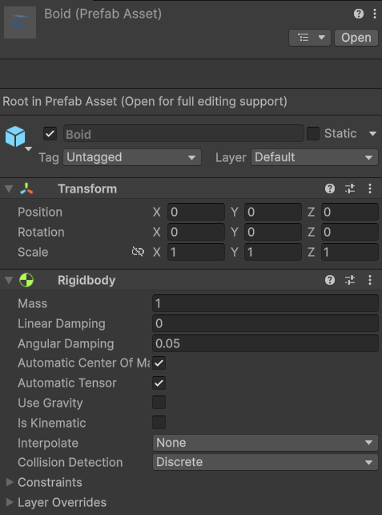
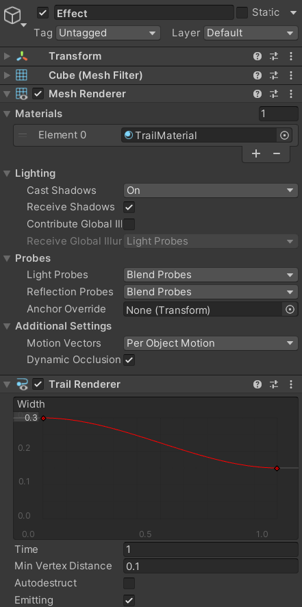

# 群落算法
实现鱼群、鸟群、蜜蜂等群落的模拟。
群落应符合以下规则：
- 避免与邻近个体发生碰撞
- 避免与障碍物发生碰撞
- 趋向与邻近的个体采用相同的速度和方向
- 向邻近个体的平均位置靠近
# 准备
- 个体（Boid）：准备好模型并添加基础组件



- 吸引子（Attractor）：空物体，用于挂载吸引子脚本，它是一个群落的中心
- 生成器（Spawner）：空物体，用于挂载生成器脚本
- 障碍物（Obstacle）：添加有碰撞器的障碍物，用于测试


# 代码
# 吸引子（Attractor）
- Attractor 是所有 Boid 聚集的对象。没有它，Boid 会飞出屏幕。
- 让它沿着 Sin 函数移动
using UnityEngine; | |
namespace Boids | |
{ | |
/// <summary> | |
/// 吸引子，群体的聚集中心 | |
/// </summary> | |
public class Attractor : MonoBehaviour | |
{ | |
[Tooltip("移动速度")] | |
public float speed = 1.5f; | |
[Tooltip("运动范围")] | |
public float radius = 6; | |
[Header("x,y,z轴向的相位")] | |
public float xPhase = 0.5f; | |
public float yPhase = 0.4f; | |
public float zPhase = 0.1f; | |
private void Update() | |
{ | |
Vector3 tPos = Vector3.zero; | |
Vector3 scale = this.transform.localScale; | |
tPos.x = Mathf.Sin(xPhase * speed * Time.time) * radius * scale.x; | |
tPos.y = Mathf.Sin(yPhase * speed * Time.time) * radius * scale.y; | |
tPos.z = Mathf.Sin(zPhase * speed * Time.time) * radius * scale.z; | |
this.transform.position = tPos; | |
} | |
} | |
} |
# 生成器（Spawner）
- 控制群落的生成
- 控制群落的行为
- 群落中所有个体的父物体
using System.Collections; | |
using UnityEngine; | |
namespace Boids | |
{ | |
/// <summary> | |
/// 群落生成器 | |
/// </summary> | |
public class Spawner : MonoBehaviour | |
{ | |
[Header("控制群落的生成")] | |
[Tooltip("预制件")] | |
public GameObject boidsPrefab; | |
[Tooltip("吸引子")] | |
public Transform boidsAttractor; | |
[Tooltip("群落数量")] | |
public int numberBoids = 100; | |
[Tooltip("生成半径")] | |
public int spawnRadius = 10; | |
[Tooltip("生成间隔")] | |
public float spawnDelay = 0.1f; | |
[Header("控制群落的行为")] | |
[Tooltip("移动速度")] | |
public float velocity = 30; | |
[Tooltip("邻近个体检测范围")] | |
public float neighborDistance = 30; | |
[Tooltip("碰撞距离")] | |
public float collDistance = 4; | |
[Tooltip("速度匹配")] | |
public float velocityMatching = 0.25f; | |
[Tooltip("中心聚集")] | |
public float flockCenter = 0.2f; | |
[Tooltip("个体间碰撞避免")] | |
public float collAvoidNeighbor = 2; | |
[Tooltip("个体与其他物体间碰撞避免")] | |
public float collAvoidOtherNeighbor = 10; | |
[Tooltip("向内吸引系数")] | |
public float attractPull = 2; | |
[Tooltip("向外推出系数")] | |
public float attractPush = 2; | |
[Tooltip("个体与吸引子之间的距离")] | |
public float attractPushDistance = 5f; | |
[Tooltip("刷新频率")] | |
public float refreshRate = 0.02f; | |
private void Start() | |
{ | |
StartCoroutine(InstantiateBoids()); | |
} | |
/// <summary> | |
/// 实例化群落 | |
/// </summary> | |
private IEnumerator InstantiateBoids() | |
{ | |
int spawnCount = 0; | |
WaitForSeconds wait = new WaitForSeconds(spawnDelay); | |
while (spawnCount < numberBoids) | |
{ | |
spawnCount++; | |
Instantiate(boidsPrefab, Vector3.zero, Quaternion.identity, this.transform); | |
yield return wait; | |
} | |
} | |
} | |
} |
# Neighborhood 脚本
- 挂载到个体上
- 在协程中使用球形射线检测，性能比触发器高
- 用于跟踪所有邻近个体的信息，包括：
- 邻近个体的平均位置、速度、个体间距
- 其他邻近物体（障碍物）的平均位置
using System.Collections; | |
using System.Collections.Generic; | |
using UnityEngine; | |
namespace Boids | |
{ | |
/// <summary> | |
/// 跟踪所有邻近的个体的信息，包括平均位置、速度、个体间距 | |
/// </summary> | |
public class Neighborhood : MonoBehaviour | |
{ | |
/// <summary> | |
/// 所有邻近个体 | |
/// </summary> | |
private List<Boid> neighbors; | |
/// <summary> | |
/// 其他邻近物体 | |
/// </summary> | |
private List<GameObject> otherNeighbors; | |
private Transform tra; | |
private SphereCollider coll; | |
private Spawner spawner; | |
/// <summary> | |
/// 所有邻近个体的平均位置，如果没有则返回 Vector3.zero | |
/// </summary> | |
public Vector3 AveragePositionNeighbors | |
{ | |
get | |
{ | |
Vector3 avg = Vector3.zero; | |
if (neighbors.Count == 0) return avg; | |
foreach (var neighbor in neighbors) | |
{ | |
avg += neighbor.Tra.position; | |
} | |
return avg / neighbors.Count; | |
} | |
} | |
/// <summary> | |
/// 所有邻近个体的平均速度，如果没有则返回 Vector3.zero | |
/// </summary> | |
public Vector3 AverageVelocity | |
{ | |
get | |
{ | |
Vector3 avg = Vector3.zero; | |
if (neighbors.Count == 0) return avg; | |
foreach (var neighbor in neighbors) | |
{ | |
avg += neighbor.Rig.linearVelocity; | |
} | |
return avg / neighbors.Count; | |
} | |
} | |
/// <summary> | |
/// 碰撞距离内的所有个体的平均位置，如果没有则返回 Vector3.zero | |
/// </summary> | |
public Vector3 AverageCollisionPositionNeighbors | |
{ | |
get | |
{ | |
Vector3 avg = Vector3.zero; | |
if (neighbors.Count == 0) return avg; | |
// 邻近个体数量 | |
int nearCount = 0; | |
foreach (var neighbor in neighbors) | |
{ | |
Vector3 pos = neighbor.Tra.position; | |
if (Vector3.Distance(pos, tra.position) <= spawner.collDistance) | |
{ | |
avg += pos; | |
nearCount++; | |
} | |
} | |
return avg / nearCount; | |
} | |
} | |
/// <summary> | |
/// 碰撞距离内的所有其他邻近物体的平均位置，如果没有则返回 Vector3.zero | |
/// </summary> | |
public Vector3 AverageCollisionPositionOthers | |
{ | |
get | |
{ | |
Vector3 avg = Vector3.zero; | |
if (neighbors.Count == 0) return avg; | |
// 邻近个体数量 | |
int nearCount = 0; | |
foreach (var otherNeighbor in otherNeighbors) | |
{ | |
Vector3 pos = otherNeighbor.transform.position; | |
if (Vector3.Distance(pos, tra.position) <= spawner.collDistance) | |
{ | |
avg += pos; | |
nearCount++; | |
} | |
} | |
return avg / nearCount; | |
} | |
} | |
private void Awake() | |
{ | |
tra = this.GetComponent<Transform>(); | |
coll = this.GetComponent<SphereCollider>(); | |
spawner = tra.parent.GetComponent<Spawner>(); | |
} | |
private void Start() | |
{ | |
neighbors = new List<Boid>(); | |
otherNeighbors = new List<GameObject>(); | |
StartCoroutine(UpdateList()); | |
} | |
/// <summary> | |
/// 更新邻近个体列表 | |
/// </summary> | |
/// <returns></returns> | |
private IEnumerator UpdateList() | |
{ | |
yield return null; | |
WaitForSeconds wait = new WaitForSeconds(spawner.refreshRate); | |
while (true) | |
{ | |
neighbors.Clear(); | |
otherNeighbors.Clear(); | |
RaycastHit[] raycastHits = Physics.SphereCastAll(tra.position, spawner.neighborDistance, tra.forward, spawner.neighborDistance); | |
foreach (RaycastHit raycast in raycastHits) | |
{ | |
if (raycast.transform.TryGetComponent<Boid>(out Boid temp)) | |
{ | |
neighbors.Add(temp); | |
} | |
else | |
{ | |
otherNeighbors.Add(raycast.transform.gameObject); | |
} | |
} | |
yield return wait; | |
} | |
} | |
} | |
} |
# 个体（Boid）
- 挂载到个体上
- 随机初始位置，随机颜色（可选）
- 利用刚体进行运动
- 根据 Neighborhood 脚本中的信息计算个体的速度（线性插值）
- 在协程中实现，性能比 Update 高
using System.Collections; | |
using UnityEngine; | |
namespace Boids | |
{ | |
/// <summary> | |
/// Boids | |
/// </summary> | |
public class Boid : MonoBehaviour | |
{ | |
/// <summary> | |
/// 即使有内置 transform 也需要缓存 | |
/// 反复调用 this.transform 会有性能损失，因为每次调用都会触发底层的 C++ 到 C# 的转换开销 | |
/// </summary> | |
public Transform Tra { get; private set; } | |
public Rigidbody Rig { get; private set; } | |
private MeshRenderer mRenderer; | |
private TrailRenderer tRenderer; | |
private Spawner spawner; | |
private Neighborhood neighborhood; | |
private void Awake() | |
{ | |
Tra = this.GetComponent<Transform>(); | |
Rig = this.GetComponent<Rigidbody>(); | |
mRenderer = this.GetComponentInChildren<MeshRenderer>(); | |
tRenderer = this.GetComponentInChildren<TrailRenderer>(); | |
spawner = Tra.parent.GetComponent<Spawner>(); | |
neighborhood = this.GetComponent<Neighborhood>(); | |
} | |
private void Start() | |
{ | |
Init(); | |
LookAhead(); | |
StartCoroutine(UpdateMovement()); | |
} | |
/// <summary> | |
/// 初始化 | |
/// </summary> | |
private void Init() | |
{ | |
// 随机初始位置 | |
Tra.position = Random.insideUnitSphere * spawner.spawnRadius; | |
// 随机初始速度 | |
Rig.linearVelocity = Random.onUnitSphere * spawner.velocity; | |
// 随机颜色，并保证不暗淡 | |
Color randomColor_start; | |
Color randomColor_end; | |
do | |
{ | |
randomColor_start = new Color(Random.value, Random.value, Random.value); | |
randomColor_end = new Color(Random.value, Random.value, Random.value); | |
} | |
while (randomColor_start.r + randomColor_start.g + randomColor_start.b < 1 || | |
randomColor_end.r + randomColor_end.g + randomColor_end.b < 1 | |
); | |
foreach (Material mat in mRenderer.materials) | |
{ | |
mat.color = randomColor_start; | |
} | |
tRenderer.startColor = randomColor_start; | |
tRenderer.endColor = randomColor_end; | |
} | |
/// <summary> | |
/// 更新移动 | |
/// </summary> | |
private IEnumerator UpdateMovement() | |
{ | |
yield return null; | |
WaitForSeconds wait = new WaitForSeconds(spawner.refreshRate); | |
while (true) | |
{ | |
Move(); | |
LookAhead(); | |
yield return wait; | |
} | |
} | |
/// <summary> | |
/// 向前看 | |
/// </summary> | |
private void LookAhead() | |
{ | |
Tra.LookAt(Tra.position + Rig.linearVelocity); | |
} | |
/// <summary> | |
/// 移动 | |
/// </summary> | |
private void Move() | |
{ | |
Vector3 velocity = Rig.linearVelocity; | |
Vector3 collisionAvoid = CollisionAvoid(); | |
Vector3 collisionAvoidOthers = CollisionAvoidOthers(); | |
Vector3 velocityAlign = VelocityMatch(); | |
Vector3 velocityCenter = VelocityCenter(); | |
velocity = Vector3.Lerp(velocity, velocityAlign, spawner.velocityMatching * Time.deltaTime); | |
velocity = Vector3.Lerp(velocity, velocityCenter, spawner.flockCenter * Time.deltaTime); | |
velocity = Vector3.Lerp(velocity, collisionAvoid, spawner.collAvoidNeighbor * Time.deltaTime); | |
velocity = Vector3.Lerp(velocity, collisionAvoidOthers, spawner.collAvoidOtherNeighbor * Time.deltaTime); | |
Attract(ref velocity); | |
velocity = velocity.normalized * spawner.velocity; | |
Rig.linearVelocity = velocity; | |
} | |
/// <summary> | |
/// 靠近或远离吸引子 | |
/// </summary> | |
/// <param name="velocity"></param> | |
/// <returns></returns> | |
private void Attract(ref Vector3 velocity) | |
{ | |
// 指向吸引子的矢量 | |
Vector3 towardAttractor = spawner.boidsAttractor.transform.position - Tra.position; | |
//true: 远离吸引子 | |
bool isTowardAttractor = towardAttractor.magnitude > spawner.attractPushDistance; | |
// 指向吸引子的矢量，长度为速度的大小 | |
Vector3 attractVelocity = towardAttractor.normalized * spawner.velocity; | |
// 分情况求方向 | |
if (isTowardAttractor) | |
{ | |
velocity = Vector3.Lerp(velocity, attractVelocity, spawner.attractPull * Time.deltaTime); | |
} | |
else | |
{ | |
velocity = Vector3.Lerp(velocity, -attractVelocity, spawner.attractPush * Time.deltaTime); | |
} | |
} | |
/// <summary> | |
/// 个体间避免碰撞 | |
/// </summary> | |
/// <returns></returns> | |
private Vector3 CollisionAvoid() | |
{ | |
Vector3 velocityAvoid = Vector3.zero; | |
Vector3 averagePosition = neighborhood.AverageCollisionPositionNeighbors; | |
if (averagePosition != Vector3.zero) | |
{ | |
velocityAvoid = Tra.position - averagePosition; | |
velocityAvoid = velocityAvoid.normalized * spawner.velocity; | |
} | |
return velocityAvoid; | |
} | |
/// <summary> | |
/// 与其他物体避免碰撞 | |
/// </summary> | |
/// <returns></returns> | |
private Vector3 CollisionAvoidOthers() | |
{ | |
Vector3 velocityAvoid = Vector3.zero; | |
Vector3 averagePositionOthers = neighborhood.AverageCollisionPositionOthers; | |
if (averagePositionOthers != Vector3.zero) | |
{ | |
velocityAvoid = Tra.position - averagePositionOthers; | |
velocityAvoid = velocityAvoid.normalized * spawner.velocity; | |
} | |
return velocityAvoid; | |
} | |
/// <summary> | |
/// 速度匹配 | |
/// </summary> | |
/// <returns></returns> | |
private Vector3 VelocityMatch() | |
{ | |
Vector3 velocityAlign = neighborhood.AverageVelocity; | |
if (velocityAlign != Vector3.zero) | |
{ | |
velocityAlign = velocityAlign.normalized * spawner.velocity; | |
} | |
return velocityAlign; | |
} | |
/// <summary> | |
/// 中心聚集 | |
/// </summary> | |
/// <returns></returns> | |
private Vector3 VelocityCenter() | |
{ | |
Vector3 velocityCenter = neighborhood.AveragePositionNeighbors; | |
if (velocityCenter != Vector3.zero) | |
{ | |
velocityCenter -= Tra.position; | |
velocityCenter = velocityCenter.normalized * spawner.velocity; | |
} | |
return velocityCenter; | |
} | |
} | |
} |
# 测试
现在 Boid 看起来像是蜜蜂。你可以更改 Spawner 的数值以达到不同的效果。下表中列出了一些有趣的版本：
| Default | Sparse follow | Small groups | Formation | |
|---|---|---|---|---|
| velocity | 30 | 20 | 20 | 20 |
| neighborDistance | 15 | 15 | 4 | 15 |
| collDistance | 4 | 10 | 2 | 10 |
| velocityMatching | 0.25 | 0.25 | 0.25 | 0.25 |
| flockCenter | 0.2 | 0.2 | 8 | 0.2 |
| collAvoidNeighbor | 2 | 4 | 10 | 4 |
| collAvoidOtherNeighbor | 10 | 10 | 10 | 10 |
| attractPull | 2 | 1 | 1 | 3 |
| attractPush | 2 | 2 | 20 | 2 |
| attractPushDistance | 5 | 20 | 20 | 1 |
| refreshRate | 0.02 | 0.02 | 0.02 | 0.02 |
默认配置的演示（白色方块是障碍物）：